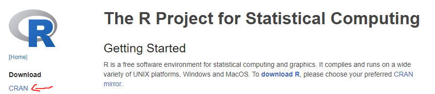

0.1 R - Installation and Updating
Installing R
Important Information
Hello future participants of the workshop “Handling Uncertainty in your Data”!
This guide will help you to install R if you haven’t installed it yet, or update your R in case you have an older version. We will also cover how to install all packages you will need for the workshop, and other things you might want to prepare in advance.
You might already be an expert in R - feel free to skip this guide if all of the following conditions are met:
- You have
Rinstalled, and it’s at least version 4.0. To check which version you have, runR.versionin yourRconsole. If your version is lower than 4, please update. - You have RStudio installed, or alternatively, an editor of your choice that can handle
Rand that you are comfortable with. (The instructors of the workshop will use RStudio.) - You have installed the following packages:
tidyverse,confintr,rstatix,apaTables,babynames.
If you’re missing any of these, install them on your own or follow this guide. To jump to different sections of this guide, use the menu on the right!
Installation Guide
We want to spend as much time as possible with actual coding during the workshop, and since installing things always takes up a bit of time, we’ll frontload that bit. You all have different computers with different operating systems, and sometimes that means that some details in this guide will be slightly different for you. This guide is written from a Windows 11 perspective - should something not work for your setup, don’t hesitate to email juliane.nagel@zi-mannheim.de - happy to help!
Sometimes, people will say they hate re-installing, updating R, but it’s honestly not that bad. In fact, I (Juli) always strip my entire computer of any R-related content whenever I re-write this installation guide, so I can go through the exact same steps as you do.
R
You can download R at https://www.r-project.org/. Right on the start page, you can find a download link via CRAN (“The Comprehensive R Archive Network”).

When clicking it, you will be asked to choose a CRAN mirror, which might sound a bit obscure. Simply put, those “mirrors” around the world are servers containing identical information, in this case, the source code, additional packages and all the documentation of R. Even if one of the servers should be down, you can still get R from any of the other servers. You can download R using any mirror that you like, but you can choose a server near your location for better bandwidth. Whichever mirror you pick: Dowload R for your operating system on the next page. In my case, that’s windows.
On the next page, what you want is “base” - base R is the “basic version” of R, i.e., R without any additions.
On the next page, click the download link at the top (in my case “Download R-4.4.1 for Windows”). Once the download is complete, execute the installation file and simply click through the installation - the default settings are fine.
OPTIONAL for Windows Users: Rtools
If you are using Windows, you might also want to install Rtools (but you don’t have to). Here is what it does (so you can make an informed decision): In R, you will frequently use additional “packages” that offer additional functionalities beyond base R (e.g., functions that run fancy statistical models). Most of the time, you just download and install the pre-built “binary version” of a package, which means it is ready to be used on Windows. Sometimes, the latest version of a package is not available as a binary (yet). In this case, R will ask you whether it should “compile” the package from source, i.e., build it on your computer. For this, Rtools is needed on Windows. (Mac users don’t need this additional tool, and Linux users are usually compile everything anyways :-) )
You don’t have to use Rtools on Windows - if you don’t have it, you won’t be able to compile packages “from source”, but will have to wait until a binary version is available. I.e., you might end up with a package version that is slightly older. In most cases, that’s fine. Sometimes, when installing packages without Rtools, you might get a warning that Rtools is missing, but you can just ignore that.
If you want to install Rtools (honestly, it doesn’t hurt and isn’t complicated at all), you can find it on the same page where we previously found “base” (R) - see screenshot above. This time, click “Rtools”. Pick the version that corresponds to the R version you just installed (in my case, that’s 4.4). The download link is a bit hidden on the page:
After downloading, execute the installation file (default options are recommended).
RStudio
R is just a programming language - where you write your R code is up to you. However, some options are better than others. For example, writing it on a piece of paper or in Word is inconvenient, because it will be difficult to run the code afterwards. There are several code editors around that are much more helpful. Code editors offer some convenient features to help you code (e.g., displaying your code in different colours to make it more readable). Some editors are specialized to work with R code. One of these, probably the most popular right now, is RStudio.
Below, you can find a screenshot of what RStudio can look like. (Without going into detail, it’s obvious that it comes with a lot of useful gadgets.)
What you want to download is the free version of RStudio Desktop here: https://rstudio.com/products/rstudio/download/. (In my case, there’s a “download RStudio Desktop for Windows” button. No need to download R - if you followed this guide, you already did that.) Execute the installation file - the default options are fine.
If you open RStudio after the installation, don’t be worried when it doesn’t look like the screenshot above. I customized the appearance of my RStudio because this is what works best for me. Don’t hesitate to play around under Tools \(\to\) Global Options \(\to\) Appearance.
By the way, RStudio is such a common editor for R that people frequently confuse it with R itself! E.g., sometimes, in scientific papers, you will read things like “we used RStudio version 2024.4.2.764 for all analyses”. However, that does not tell me much (if anything) about their analyses, because the important information is what version of R they used. It’s a bit like writing “I’ve written the paper in Word” when what you want to say is “I’ve written the paper in English”. Don’t make this mistake in the future - R and RStudio are completely different things!
Aaaaand we’re done! To confirm that everything worked, open RStudio. There should be a tab that says “console” somewhere. Here, you can run R code. If you type in 41 + 1 and press Enter, [1] 42 should appear below. If it doesn’t, contact juliane.nagel@zi-mannheim.de for trouble shooting.
Installing packages
For this workshop, please install the following packages:
tidyverseconfintrrstatixapaTablesbabynames
About packages
When we’ve installed R, it can already do quite a lot of things (if not everything). However, the question is how conveniently (and standardized) we can achieve something. For example, we could write code that computes a linear mixed model for us - but most of us would certainly prefer to use a pre-existing function for that. Luckily, someone already wrote such a function, but it’s not included in R from the start. If we want to use additional functions (or additional data sets!), we have to install additional “packages”. It is very common to have many different additional packages installed.
How to install packages
As often the case in R, there are several ways to achieve what we want (here, install a package). We will describe several options here - you can just stick to the one you like best. Either way, if you install a package you do not have yet, it will get installed (duh!), but if you install a package you have already installed, the version you currently have will be overwritten by the latest version of the package that’s available.
Whichever method you use, R will then tell you some things about the installation status of the package (e.g., where the package was installed, how large it is etc.) in the console. Most importantly, whether the installation was successful. It should say “package ‘babynames’ successfully unpacked and MD5 sums checked” somewhere at the end.
As an example, we will install the package babynames, which includes data about the popularity of different baby names over the years. (Packages that provide additional functions for R are more common, but packages are also a great way to provide toy data sets to other people!) For this package, the “report” R gives you is very short - don’t worry if the console goes a little crazy if you install bigger packages with a lot of “dependencies” (i.e., that require additional packages to work and install those as well during the process).
install.packages()
You can install the package by typing install.packages("babynames") in an R console (e.g., after opening RStudio) and pressing enter.
You can install multiple packages at once like this: install.packages(c("babynames", "apaTables")). Mind the c() wrapped around the package names.
RStudio Tools
Within RStudio, click on Tools at the top, and then Install Packages…. Enter the package you would like to install (babynames). Autocomplete should help you. The installation report in the console should look like the screenshot you can find above (under “install.packages()”). All the other default options are fine (in fact, if you use install.packages() as shown above, it will use the same default options).
You can install multiple packages at once by entering multiple package names (separated by a space or comma).
RStudio autodetect
It is worth noting that RStudio will warn you if you open a script that loads a package that you have not installed. (We did not talk about loading packages yet - more about that in the introductory workshop - but briefly, you need to load packages that you want to use first in your R scripts.) You can simply click on “install” and any missing packages you need for the script in question will automatically be installed. Once again, the report in the console should look the same as above. Note that this method does not work for updating packages that you already have installed.
If things go wrong
Sometimes, installing packages can lead to unexpected errors. In many cases, the issue is not caused by the package you are trying to install itself, but rather by another package that it requires and also installs in the process. Surprisingly often, the issue can be fixed by directly re-installing the package that caused the process to fail, and then trying to install the original package you wanted again. If a package is very stubborn and does not want to be installed, contact juliane.nagel@zi-mannheim.de for trouble shooting.
Sidenote
By the way: Anyone can write an R package. That means that you should not install any packages that you do not trust. Packages that you can get from CRAN have to pass several quality checks and have to fulfill certain requirements (e.g., that no sneaky .exe files are included in the package), so they are safe to install. It is also possible to e.g. get packages from users on GitHub, but you can’t install them using e.g. install.packages(), but will need additional tools for this (such as the package devtools).
Updating R
If you already have R installed, and want to update it, here are some recommendations how to achieve this.
Quick Detour
A general word of caution: As other programming languages, R develops constantly - new functions are added, old ones change etc. This means that over time, more powerful versions of R are available, bugs get fixed - but it also means that your old code won’t work anymore if it relies on the behaviour of an old R version. There are a few links in the “Further Reading” section if you want to get into the topic, but we will not discuss it here in detail. Most updates don’t break your code, and it’s even more rare that they change your results, especially when it’s “minor” updates, e.g., from R 4.2.1 to 4.2.2. That being said, if you are still running some version of R 3, updating might affect your current code. If you are unsure about updating before the workshop, e.g. because you’re in the middle of an important analysis, feel free to talk to juliane.nagel@zi-mannheim.de (if you do, please mention your current R version).
The dirty way
In principle, you could simply follow the installation guide above and end up with a clean new version of R. Both the old and the new version will be installed on your computer, but RStudio should automatically detect the latest version (or at least ask you which version it should use). With this approach, you will need to re-install all packages you need afterwards, or copy them over manually (error-prone!). If you’re fine with re-installing a few packages (that’s what I always to after updating anyways), you can simply follow the installation guide above, or …
The clean way
… you can use the package installr, which, as the name suggests, helps you to install R-related things and is often recommended for a clean update. (Note that with this approach, just as with the “dirty way”, the old R version will stay installed on your computer.) If you don’t have installr installed yet, do so by running install.packages("installr") in the console.
For the following steps, don’t use RStudio, but the R GUI. This works best with a “pure” version of R, without any magic that RStudio might want to add. For good measure, close RStudio if you haven’t already, and search for R in your apps. If you have several installations (which you might have if you updated before, just pick the most recent one). Take a deep breath, admire the R GUI and appreciate that modern editors exist to take away this pain from you.
Run installr::updateR(). A message like this should pop up - klick OK.
Next, installr will ask you whether you would like to see the NEWS regarding the new version of R. This is a good idea to get an overview about what changed, and whether any functions that you are using might be affected by the changes. Or whether there’s a cool new feature. You can also always read about the news later, e.g. for R 4.4.1, the link is >https://cran.rstudio.com/bin/windows/base/NEWS.R-4.4.1.html>. If you click “yes” the news page will open in a new tab in your browser - the installation will not be cancelled.
installr will then ask you whether you want to install the new version - click yes. You might need to choose a mirror from where to download R (see installation guide above). When installing R, accept the defaults. After clicking “finish”, installr has a few more tricks up it’s sleeve:
If you click “Yes”, all your packages you had installed from your previous R version will be copied over to the new version. In the next step, installr will ask you whether you want to keep the packages from your old version (otherwise, they will be deleted). Lastly, installr even offers to update the packages you copied to the new version of R. For all of these steps, there are no right or wrong answers. You can choose whatever fits your needs. (E.g., I like to start with a clean slate.) Note that the whole process of copying and updating might take a little bit of time, and you will not see a progress bar or anything else that indicates what is happening.
Finally, installr will ask you whether you want to start a GUI of the new R installation. You don’t need to do that, but you could to quickly confirm that everything worked as intended (e.g., your old packages are there).
When you start RStudio the next time, it might either automatically detect your latest R version, or it should ask you which one it should use.